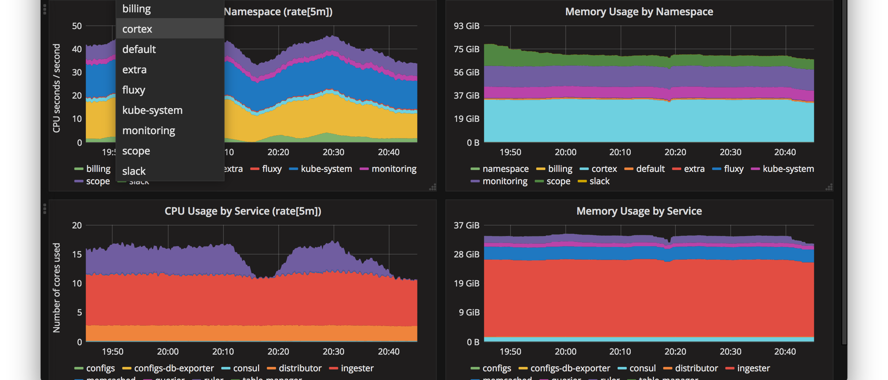

АвтоматизацияJVM
Вячеслав Смирнов
Эксперт по тестированию,
Ускоряю сервисы
Доклад о профилировании Java
Из опыта 2018-2019 года по оптимизации микросервисов:
аутентификации
выписок
печати выписок
созданных с помощью:
OpenJDK 1.8.0, Java 1.8.0
Scala
Play Framework, Akka, Alpakka
IBM.MQ, RabbitMQ, PostgreSQL
Подготовлен demo-репозиторий на github.com с профилированием Apache.JMeter
Нисходящий процесс анализа
Системные метрики
Высокая утилизация CPU
Много %user , %sys, %iowait, %idle, ...
Наш Java-процесс потребляет %user , %sys, ...

Системные метрики
Процессор, память
Нисходящий процесс анализа
Метрики MBeans
Размер HEAP
Количество классов , потоков, ...
Работа сборщика мусора, количество сборок , ...
Метрики MBeans
Размер HEAP
Нисходящий процесс анализа
Профилирование JVM
Java-потоки с именем Thread-* CPU , память
Модуль ru.raiffeisen.report CPU , память
Класс ru.raiffeisen.report.PdfReport потребляет CPU , память
Метод ru.raiffeisen.report.PdfReport.Print потребляет CPU
Профилирование JVM
Графический результат работы профайлера
Профилирование JVM
Текстовый результат работы профайлера
Задача
Профилировать и мониторить бесплатно.
Автоматически запускать профилирование.
Отображать тренды по метрикам:
количество объектов в памяти;
длительность работы методов;
производительность потоков;
мониторинг системы.
Мониторить и профилировать Java 8 бесплатноКакую версию Java и профайлер выбрать?
Версии Oracle Java 8 и Open JDK
Oracle Java 8 (≤ 8u202 — органичения лицензии)
java version "1.8.0_201"
Java(TM) SE Runtime Environment (build 1.8.0_201-b09)
Java HotSpot(TM) 64-Bit Server VM (build 25.201-b09, mixed mode)
OpenJDK 8 (самая новая версия)
openjdk version "1.8.0_212"
OpenJDK Runtime Environment (build 1.8.0_212-b04)
OpenJDK 64-Bit Server VM (build 25.212-b04, mixed mode)
Мониторить и профилировать бесплатно
Oracle Java 8 (≤ 8u202 )
InfluxDB, Telegraf, Jolokia
SJK (Swith Java Knife)
JFR (Java Fligth Recorder, на тестовом стенде )
OpenJDK 8
InfluxDB, Telegraf, Jolokia
SJK (Swith Java Knife)
Grafana
Визуализация в виде таблиц и графиков
Столбчатые диаграммы
Фильтрация
InfluxDB
Единое хранилище метрик с фильтрацией по времени и тегам
Формат InfluxLine просто создать из txt/csv/json с помощью awk
Аналические функции:
группировки: sum, count, max, mean, percentile
производные: last() + non_negative_derivative
Telegraf
Метрики по
инфраструктуре: haproxy, postgresql_extensible, rabbitmq
системе: cpu , disk, diskio, kernel, mem, processes, swap
процессам: procstat
java: jolokia2
Автоматизация профилирования Java
из консоли: exec (+ bash, sjk, awk)
SJK: Swiss Java Knife
Статистика по работе Java Virtual Machine:
активности потоков
активности методов
количеству объектов в памяти
JFR: Java Fligth Recorder
Статистика по работе Java Virtual Machine:
скорости создания объектов в памяти
работе сборщика мусора
количеству исключений
блокировкам
Мониторить и профилировать Java 8 бесплатнопомогают:
TIG (Telegraf, InfluxDB, Grafana)SJK для профилированияJFR для исключенийAWK для конвертации
Автоматически запускать профилированиеSJK для профилирования
и памяти (hh )
и кода (stcap )
Запустить профилирование памяти (sjk hh )
Подключение только по PID
> java -jar sjk.jar --help hh
Usage: hh [options]
-p, --pid
JVM process PID
Запустить профилирование кода (sjk stcap )
Подключение по PID или JMX
[Stack Capture] Dumps stack traces to file for further processing
Usage: stcap [options]
-p, --pid
JVM process PID
-s, --socket
Socket address for JMX port (host:port)
--user
User for JMX authentication (only for socket connection)
Запустить профилирование (sjk hh + stcap )
Подключение по PID требует совпадения UID
> sudo -u user java -jar sjk.jar hh --pid $PID
> sudo -u user java -jar sjk.jar stcap --pid $PID
Запустить профилирование (sjk hh + stcap )
Профилирование требует наличия JDK
> JAVA=/opt/jdk1.8.0_201/bin/java
> yum install java-1.8.0-openjdk-devel.x86_64
> JAVA=`ls -l /etc/alternatives/java | \
sed 's|.* -> || ' | sed 's|/jre|| '`
> sudo -u user $JAVA -jar sjk.jar hh --pid $PID
> sudo -u user $JAVA -jar sjk.jar stcap --pid $PID
Автоматически запускать профилированиеSJK для нужного java-процесса
Запустить SJK для нужного java-процесса
Найти PID по командной строке с pgrep
> pgrep -fa "java"
9044 /usr/lib/jvm/java -1.11.0-openjdk-amd64/bin/java -Dmaven.multiModuleProjectDirectory=/home/user/Project/github.com/jvm.profiling.automation -Dmaven.home=/snap/intellij-idea-community/169/plugins/maven/lib/maven3 -Dclassworlds.conf=/snap/intellij-idea-community/169/plugins/maven/lib/maven3/bin/m2.conf9077 java -Xms256M -Xmx1024M -jar ApacheJMeter-5.1.1.jar -d /home/user/Project/github.com/jvm.profiling.automation/target/jmeter
> pgrep -f "^java .*-jar ApacheJMeter" -u user
9077
Запустить SJK для нужного java-процесса
Найти PID c использованием JPS
> java -jar sjk.jar jps
9044 org.codehaus.classworlds.Launcher -Didea.version2019.2.1 com.lazerycode.jmeter:jmeter-maven-plugin:2.8.6:jmeter -P Core
9077 ApacheJMeter-5.1.1.jar -d /home/user/Project/github.com/jvm.profiling.automation/target/jmeter -j /home/user/Project/github.com/jvm.profiling.automation/target/jmeter/logs/Core.jmx.log -l /home/user/Project/github.com/jvm.profiling.automation/target/jmeter/results/Core-2019-09-06_12-10-39.csv -n -t /home/x1337/Project/github.com/jvm.profiling.automation/target/jmeter/testFiles/Core.jmx -L ERROR9500 sjk.jar jps
> java -jar sjk.jar jps \
> --filter-description "ApacheJMeter*" \
> --process-details PID
9077
Запустить SJK для нужного java-процесса
Найти PID c использованием JPS (с UID)
> sudo -u user java -jar sjk.jar jps \
> --filter-description "ApacheJMeter*" \
> --process-details PID
9077
Из SJK (hh ) в InfluxDB
Пример вывода команды hh
> sudo -u user $JAVA -jar sjk.jar hh --pid $PID
# Instances Bytes Type
1: 30000 3330000 [C
2: 40000 220000 java.lang.String
3: 7000 111111 java.lang.Class
4: 15000 50000 ru.raiff.util.test.Map$Node
Total 92000 3711111
Из SJK (hh ) в InfluxDB
Необходимый формат результата
Type
g1
g2
g3
Count
Bytes
char[]
-
-
-
30000
3330000
java.lang.String
java
lang
-
40000
220000
java.lang.Class
java
lang
-
7000
111111
ru.raiff.util.test.Map$Node
ru
raiff
util
15000
50000
Total -
-
-
92000
3711111
Из SJK (hh ) в InfluxDB
Необходимый формат результата
Type
g1
g2
g3
Count
Bytes
char[]
-
-
-
30000
3330000
java.lang.String
java
lang
-
40000
220000
java.lang.Class
java
lang
-
7000
111111
ru.raiff.util.test.Map$Node
ru
raiff
util
15000
50000
Total.Count=92000, Total.Bytes=3711111
Из SJK (hh ) в InfluxDB
Необходимый формат результата
Type
g1
g2
g3
Count
Bytes
%C %B
char[]
-
-
-
30000
3330000
32.6 89.7
java.lang.String
java
lang
-
40000
220000
43.4 5.9
java.lang.Class
java
lang
-
7000
111111
7.6 2.9
ru.raiff.util.test.Map$Node
ru
raiff
util
15000
50000
16.3 1.3
Total.Count=92000, Total.Bytes=3711111
Автоматически запускать профилированиеSJK , используя bash
Запустить SJK , используя bash
Отправлять метрики, пока приложение работает
while [ -n $PID ]
do
sudo -u user $java -jar sjk.jar hh --live --pid $PID | \
awk -v app=JMeter -v n=30 -f sjk.hh.2.influx.awk | \
curl -i -XPOST http://influxHost:8086/write?db=sjk \
--data-binary @-
sleep 30.0
PID =`pgrep -f "^java .*-jar ApacheJMeter"`
done
Автоматически запускать профилированиеSJK , используя Telegraf
Запустить SJK , используя Telegraf
В telegraf.conf добавляем inputs.exec
[[inputs.exec]] commands = [
"/opt/sjk/sjk.hh.sh"
]
timeout = "30s"
interval = "60s"
data_format = "influx"
Запустить SJK , используя Telegraf
В командном файле парсим и отправляем
Автоматически запускать профилирование
SJK (stcap и hh ) подключать к JVM по PID SJK (jps ) или pgrep для поиска PID root и sudo -u для смены пользователяAWK для конвертации в формат influxline Telegraf и exec для автоматизации запуска
Отображать тренды по метрикам
SJK (hh ): количество объектов в памяти
Тренды упрощают процесс исправления дефектов


{kind=link}